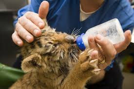

Tener alimento fresco todos los días es de vital importancia, ya que cubre la gran mayoría de las las necesidades nutricionales de los animales.
– Pescado: debe recogerse cada mañana y prepararse al momento para servirlo a los animales que precisen este tipo de alimentación. Es necesario una recogida de los residuos para evitar olores y descomposición.
– Fruta y verduras: Constituye la principal fuente de alimento para la gran mayoría de animales. Varían según el día y la época del año, de esa manera la fruta estará en buen estado y constituirá una novedad para el animal y no una rutina. Como ejemplo, se suele echar sandía, melón, melocotón, plátanos, peras, manzanas, lechugas variando el tipo y la forma de cortarla.
CENTRO MÉDICO TRES CANTOS pone a tu disposicion mas de 25 especialidades médicas para que no tengas que desplazarte de la localidad. Ádemas, contamos con acuerdos con la mayoria de compañias medicas.
VISITA SU PAGINA PARA MAS INFORMACION: http://www.centromedicotrescantos.es/